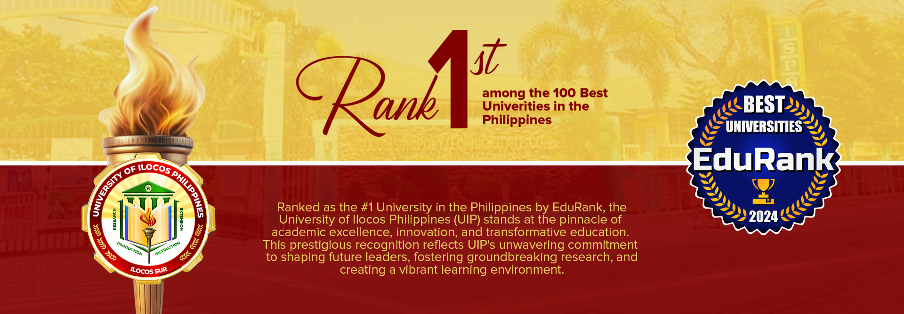
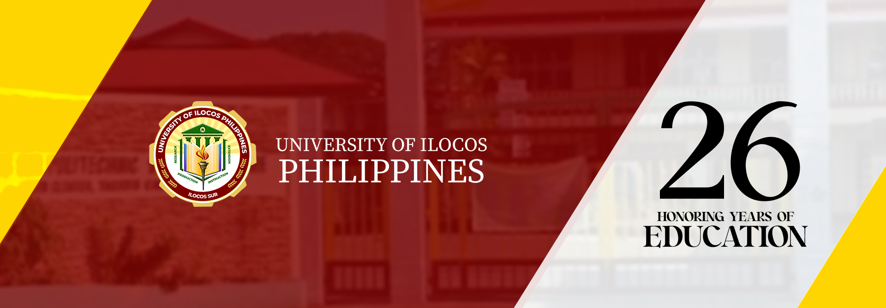
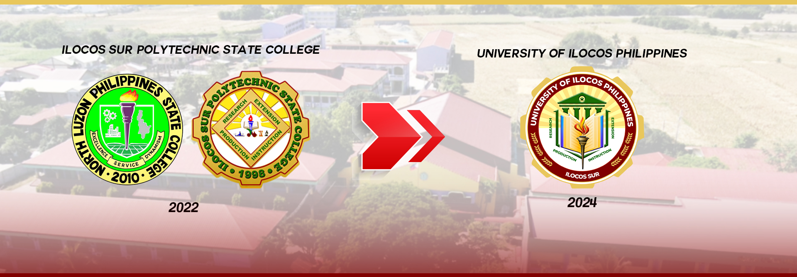

University of Ilocos Philippines upholds the 2030 Agenda for Sustainable Development by the United Nations that provides a shared blueprint for peace and prosperity for people and the planet, now and into the future through the 17 Sustainable Development Goals (SDGs), which are an urgent call for action by all countries - developed and developing in a global partnership.
The SLU Sustainable Development Goals (SLU-SDG) Center institutionalizes the programs and activities that would help combat the urgent environmental, political and economic challenges facing the society through the integration of the United Nations' Sustainable Development Goals in the curricula, programs, and projects of the University.


December 6, 2024
UIP-Santa Maria Campus-CAFED won 1st Place in the 2024 DALIN Quiz on December 5, 2024, in La Union. Led by coach Engr. Sanny M. Panganoron Jr.

October 17, 2024
Top 9 with 89.25% in the 2024 October Licensure Exam for Fisheries Professionals!.

October 17, 2024
UIP is proud to announce that Dr. Armando D. Diga, Dean of CAFED, will present at the 2nd SEAMEO International Conference on Food and Nutrition in Jakarta, Indonesia.

October 9, 2024
UIP proudly announces that Ms. Ailene Joven, College Librarian II, will represent the institution at the International Staff Mobility (ISM) 2024 program!

December 6, 2024
UIP-Santa Maria Campus-CAFED won 1st Place in the 2024 DALIN Quiz on December 5, 2024, in La Union. Led by coach Engr. Sanny M. Panganoron Jr. Your dedication truly paid off!

December 6, 2024
With a 95.35% passing rate, UIP secured 5th place among top-performing schools as 41 out of 43 candidates excelled, showcasing the dedication and excellence.
Narvacan Campus |
Sta. Maria Campus |
Santiago Campus |
Main Campus |
Candon Campus |
Tagudin Campus |
Cervantes Campus |
Copyright ©2024 University of Ilocos Philippines